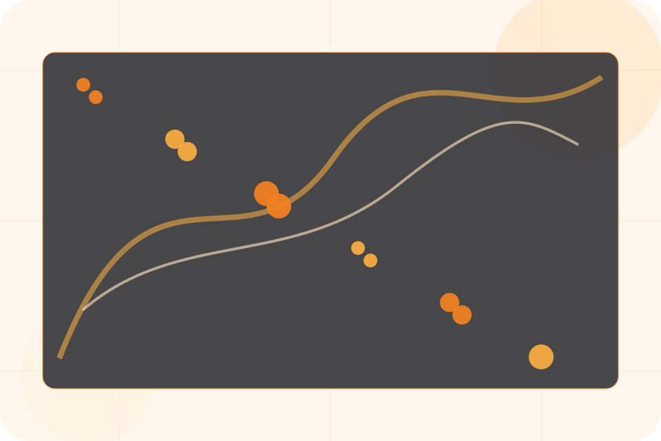
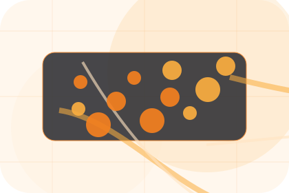
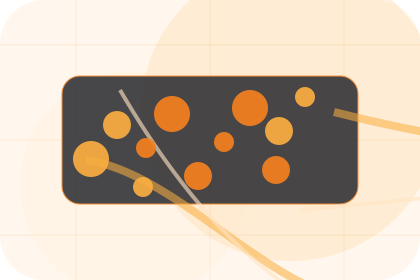
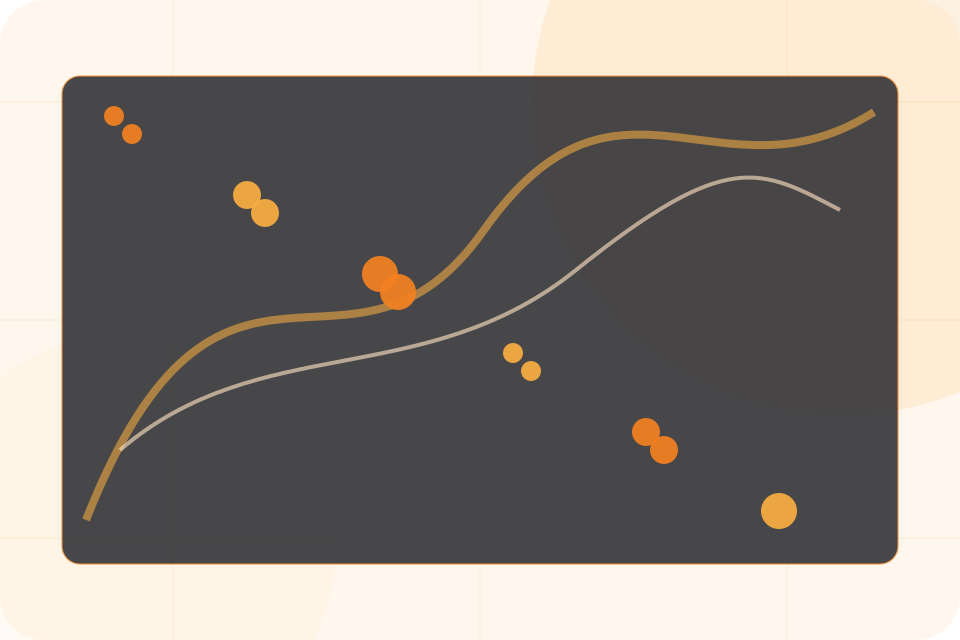
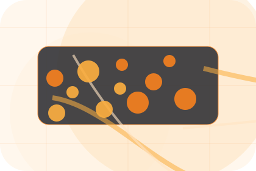
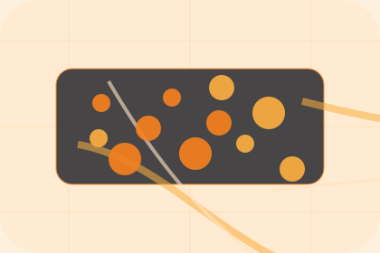

Details
What information helps Nexus respond with a useful answer instead of a generic reply.
Contact / 01
Contact opens as a clear technology decision hub: what Nexus offers, who it helps, why it matters, and which route to take first.
The first screen combines positioning, proof, primary action, and fast internal navigation, so people can act immediately or compare the rest of the contact route with context.
Network diagram hero
Select the closest route and Nexus keeps the next step, proof, and follow-up expectation aligned with uptime and operational control.

Contact / 02
Sales makes the contact path concrete: what to send, how the response works, and what Nexus needs before visitors request an IT audit.
The section reduces contact friction by naming the channel, expected detail, privacy path, and response expectation instead of dropping visitors into a generic form.
Request IT AuditWhat information helps Nexus respond with a useful answer instead of a generic reply.
How the visitor should think about response, urgency, location, or availability.
The expected next message keeps scope, timing, and the first practical step clear.
Contact / 03
Help makes the contact path concrete: what to send, how the response works, and what Nexus needs before visitors request an IT audit.
The section reduces contact friction by naming the channel, expected detail, privacy path, and response expectation instead of dropping visitors into a generic form.
Open Contact

What information helps Nexus respond with a useful answer instead of a generic reply.
Contact / 04
Emergency makes the contact path concrete: what to send, how the response works, and what Nexus needs before visitors request an IT audit.
The section reduces contact friction by naming the channel, expected detail, privacy path, and response expectation instead of dropping visitors into a generic form.
Request IT AuditWhat information helps Nexus respond with a useful answer instead of a generic reply.
How the visitor should think about response, urgency, location, or availability.
The expected next message keeps scope, timing, and the first practical step clear.
Contact / 05
Form makes the contact path concrete: what to send, how the response works, and what Nexus needs before visitors request an IT audit.
The section reduces contact friction by naming the channel, expected detail, privacy path, and response expectation instead of dropping visitors into a generic form.
Request IT AuditNexus keeps form practical: send the key details, choose the right contact route, and know what kind of reply to expect.
Request IT Audit
Contact / 06
Phone makes the contact path concrete: what to send, how the response works, and what Nexus needs before visitors request an IT audit.
The section reduces contact friction by naming the channel, expected detail, privacy path, and response expectation instead of dropping visitors into a generic form.
Request IT AuditNexus keeps phone practical: send the key details, choose the right contact route, and know what kind of reply to expect.
Request IT AuditContact / 08
Hours makes the contact path concrete: what to send, how the response works, and what Nexus needs before visitors request an IT audit.
The section reduces contact friction by naming the channel, expected detail, privacy path, and response expectation instead of dropping visitors into a generic form.
Request IT AuditWhat information helps Nexus respond with a useful answer instead of a generic reply.
How the visitor should think about response, urgency, location, or availability.

The expected next message keeps scope, timing, and the first practical step clear.
Contact / 09
Routing makes the contact path concrete: what to send, how the response works, and what Nexus needs before visitors request an IT audit.
The section reduces contact friction by naming the channel, expected detail, privacy path, and response expectation instead of dropping visitors into a generic form.
Request IT AuditWhat information helps Nexus respond with a useful answer instead of a generic reply.
How the visitor should think about response, urgency, location, or availability.
The expected next message keeps scope, timing, and the first practical step clear.
Contact / 10
Nexus closes the contact route with a clear action, a quick reminder of the value, and a low-friction way to request an IT audit.
Visitors who are ready can use the primary action. Visitors who are still comparing can scan the section links, proof, and support routes before they request an IT audit.
Request IT AuditThe final block keeps the choice simple: act now, compare one more proof route, or send enough detail for a focused response.
Request IT Audituptime and operational control
A network-first IT site with technical proof, orange action paths, product cards, and status-aware conversion. Contact ends with a direct path to request an IT audit, plus enough context for visitors who still need to compare.

Request IT AuditInformation is provided for planning and should be reviewed for the final client, location, and operating rules.